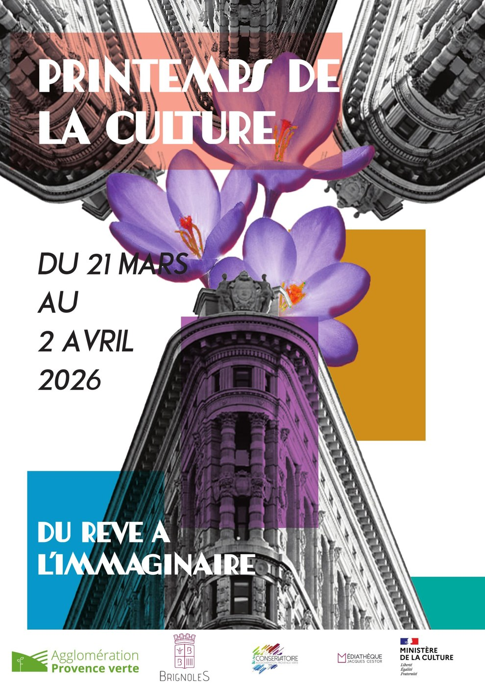
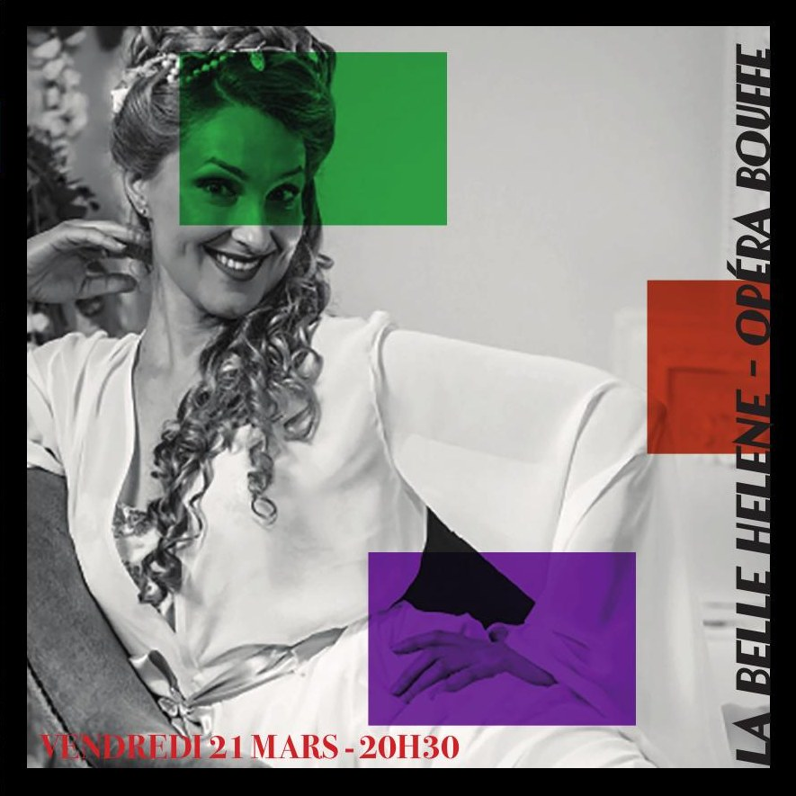
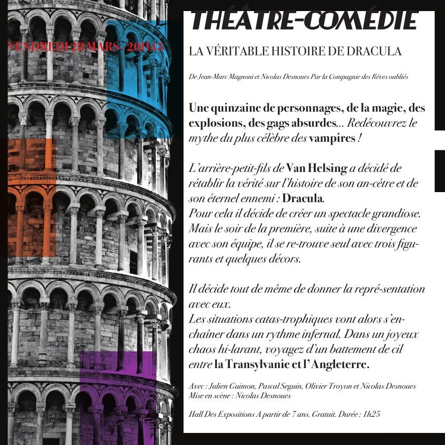
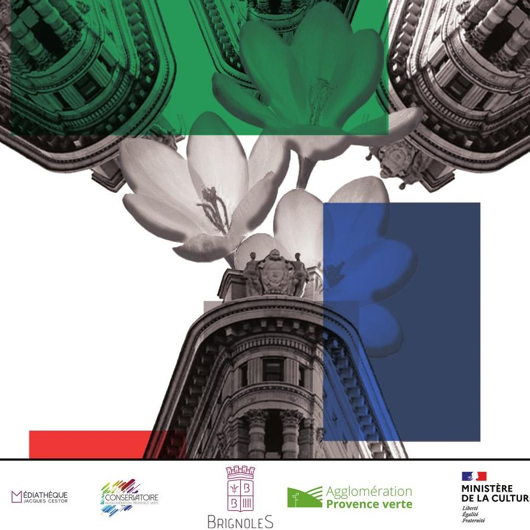

03 / 12Printemps de la Culture
Identité · Affiche · Brochure
Commande fictive pour la 8ᵉ édition du Printemps de la Culture de Brignoles, sur le thème « Du rêve à l'imaginaire » : une affiche A3 et une brochure de 20 pages au format carré 15×15 cm présentant l'ensemble de la programmation (théâtre, concerts, conférences, danse, cinéma, ateliers).
La contrainte de départ était le photomontage. J'ai construit l'identité visuelle autour du Flatiron Building de New York, désaturé et dupliqué en symétrie, que je fais fleurir de crocus violets et oranges — le végétal qui perce la pierre, comme le printemps qui traverse la ville. Des aplats de couleur en surimpression (orange, violet, bleu, vert, jaune moutarde) viennent fragmenter l'image, en écho aux affiches new-yorkaises vintage et aux compositions de Mondrian et Van Doesburg qui ont nourri mes recherches.
Cette grammaire visuelle — photo en noir et blanc, aplat de couleur qui mord sur l'image, typographie condensée — se répète ensuite sur toutes les pages de la brochure : chaque spectacle a sa double page dédiée, traitée avec ses propres visuels mais la même construction, pour que l'ensemble reste reconnaissable du début à la fin malgré la diversité des 15 événements présentés.
Techniquement, les visuels ont été retouchés sous Photoshop et Illustrator (CMJN, 300 dpi, aucun PNG ni GIF autorisé par le cahier des charges) puis assemblés sous InDesign avec les logos institutionnels obligatoires, pour un export final en PDF/X-4 prêt pour l'impression professionnelle.



